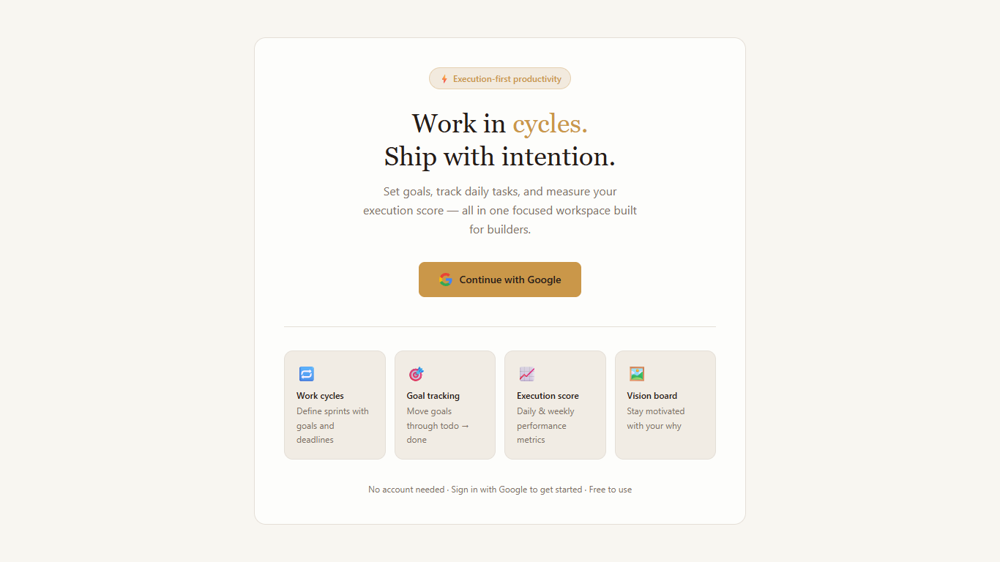
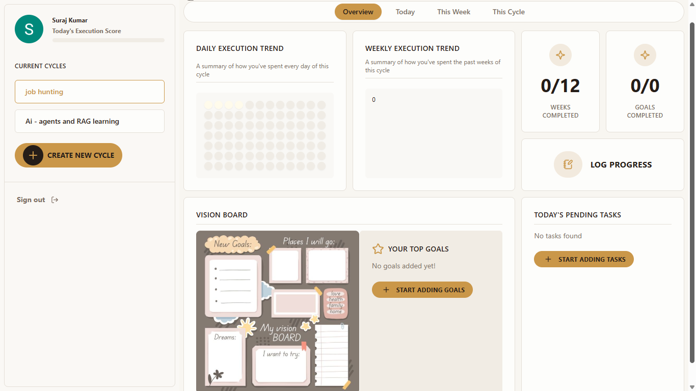
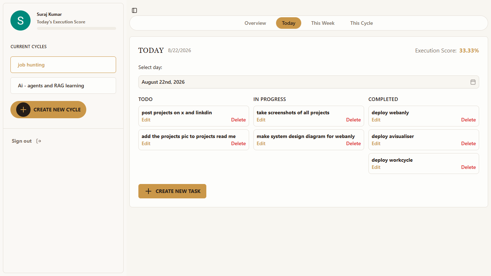

Featured Project · 03
Cyclework
A 12-week execution and goal-tracking platform that turns ambitious plans into daily action and measurable progress.

The challenge
Long-term goals often disappear inside busy schedules. Cyclework gives each goal a defined cycle, then breaks it into weekly targets and daily tasks that are simple to review and act on.
What I built
- Goal and cycle planning workflows with daily task breakdowns.
- Progress tracking based on completed execution, not just intentions.
- State management for a consistent experience across views.
Execution model
Long-term Goal→12-week Cycle→Weekly Targets→Daily Tasks
Visuals to add


